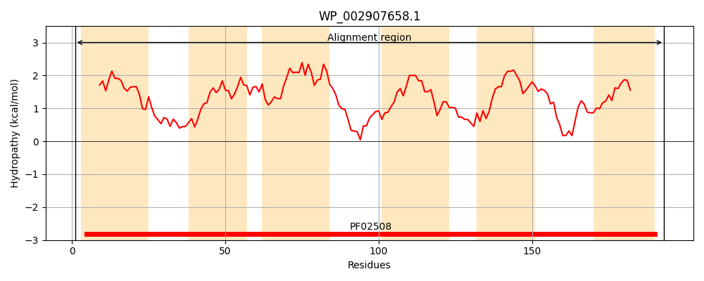
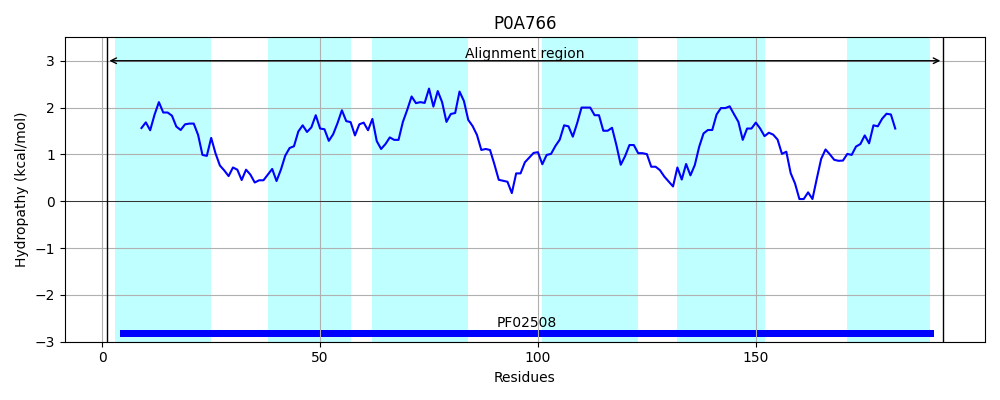
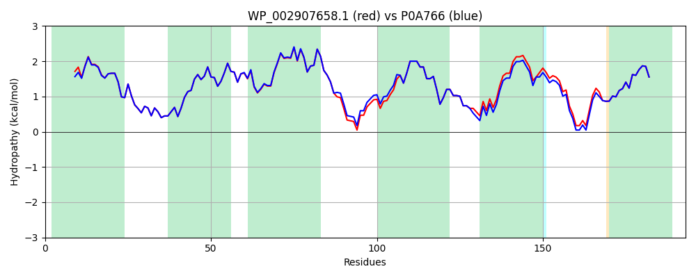

Hit Accession: P0A766
Hit TCID: 3.D.6.1.4
Hit Description: gnl|BL_ORD_ID|8612 gnl|TC-DB|P0A766|3.D.6.1.4 Electron transport complex subunit RsxA OS=Escherichia coli (strain K12) GN=rsxA PE=1 SV=1
Mach Len: 193
e:0.000000
Query TMS Count : 6
Hit TMS Count: 6
TMS-Overlap Score: 6.450000
Predicted Substrates:CHEBI:5584;hydron
BLAST Alignment:
Score: 935 , Bit scores: 364 bits, E-value: 7.4e-131, Alignment length: 193, Percentage identity: 97
Query: 1 MADYLLLFIGTVLVNNFVLVKFLGLCPFMGVSKKLETAMGMGLATTFVMTLASICAWLIDTWILIPLNLVYLRTLAFILVIAVVVQFTEMVVRKTSPALYRLLGIFLPLITTNCAVLGVALLNINLGHNFLQSALYGFAAAVGFSLVMVLFAAIRERLVVADVPAPFRGNAIALITAGLMSLAFMGFSGLVKL 193
M DYLLLF+GTVLVNNFVLVKFLGLCPFMGVSKKLETAMGMGLATTFVMTLASICAWLIDTWILIPLNL+YLRTLAFILVIAVVVQFTEMVVRKTSP LYRLLGIFLPLITTNCAVLGVALLNINLGHNFLQSALYGF+AAVGFSLVMVLFAAIRERL VADVPAPFRGNAIALITAGLMSLAFMGFSGLVKL
Sbjct: 1 MTDYLLLFVGTVLVNNFVLVKFLGLCPFMGVSKKLETAMGMGLATTFVMTLASICAWLIDTWILIPLNLIYLRTLAFILVIAVVVQFTEMVVRKTSPVLYRLLGIFLPLITTNCAVLGVALLNINLGHNFLQSALYGFSAAVGFSLVMVLFAAIRERLAVADVPAPFRGNAIALITAGLMSLAFMGFSGLVKL 193 | Protein Hydropathy Plots: |
|---|
|  |  |
Pairwise Alignment-Hydropathy Plot:
|
|---|
|  |